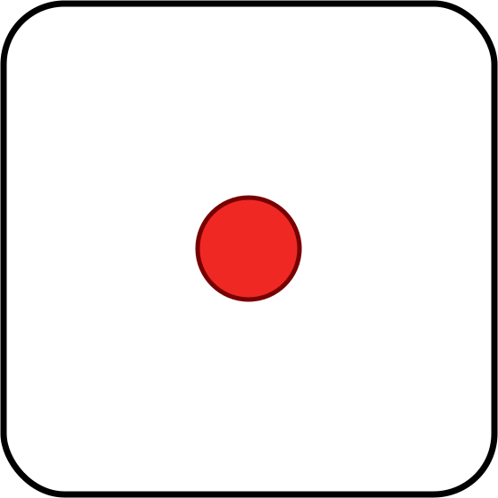
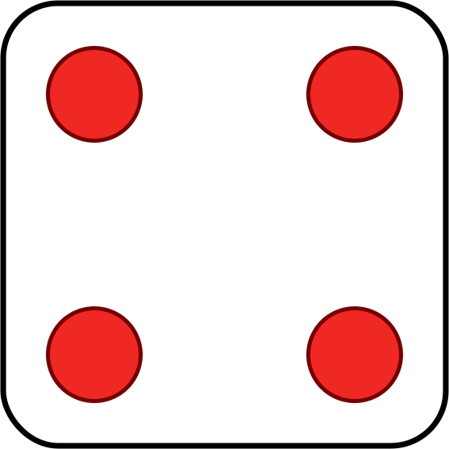
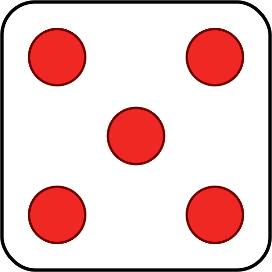
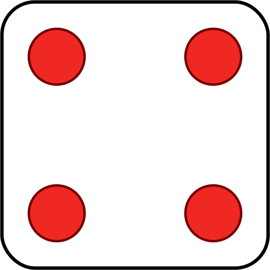
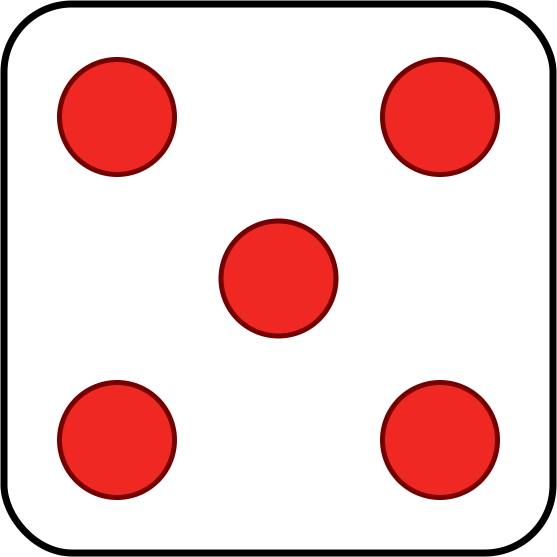
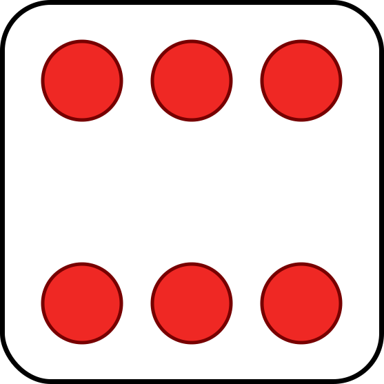
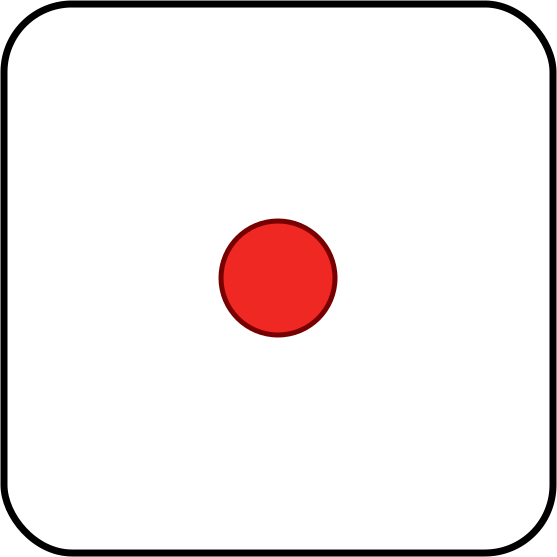
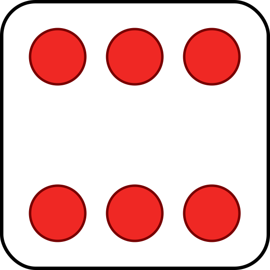

Property based testing
Artem Nikiforov @ Delimobil
О докладе
- "Practical ScalaCheck" by noelmarkham @ 47deg
- пара слов о тестировании в общем
- scalacheck - scala
- примеры тестирования свойств
Тестирование
- Входные параметры, интерпретируем, сравниваем
- Классы эквивалентности и граничные условия
- Для Int: MinValue, -1, 0, 1, MaxValue
- Тестирование на основе свойств
Пример
import org.scalacheck.Prop.forAll
import org.scalacheck.Prop
val prop: Prop = forAll { s: String =>
s.length >= 0
}prop.check
+ OK, passed 100 tests.Scalacheck
- Связывает типы со значениями
- НЕ библиотека для генерации случайных данных
- Ведет диалог между реализацией и тестами (*)
Диалог (*)
forAll { x: Int =>
Math.abs(x) >= 0
}[info] ! Falsified after 30 passed tests.
[info] > ARG_0: -2147483648scala> Integer.MIN_VALUE
res0: Int = -2147483648
scala> Math.abs(Integer.MIN_VALUE)
res1: Int = -2147483648Диалог (*)
forAll { x: Int =>
Math.abs(x) >= 0
}[info] ! Falsified after 30 passed tests.
[info] > ARG_0: -2147483648import org.scalacheck.Prop.BooleanOperators
forAll { x: Int =>
x > Integer.MIN_VALUE ==>
Math.abs(x) >= 0
}[info] + Math.abs: OK, passed 100 tests.
Yahtzee. Правила
Yahtzee

Straight 
 



Full house
Four of a kind 
Three of a kind
Straight 
Full house
Four of a kind 
Three of a kind
def winner(h1: Hand, h2: Hand): Hand = ???Yahtzee. Правила
sealed trait Die
case object One extends Die
case object Two extends Die
case object Three extends Die
case object Four extends Die
case object Five extends Die
case object Six extends Die
case class Hand(p1: Die, p2: Die, p3: Die, p4: Die, p5: Die)
Yahtzee. Правила
sealed trait Score { def value: Int }
case object Yahtzee extends Score { val value = 5 }
case object Straight extends Score { val value = 4 }
case object FullHouse extends Score { val value = 3 }
case object FourOfAKind extends Score { val value = 2 }
case object ThreeOfAKind extends Score { val value = 1 }
case object NoScore extends Score { val value = 0 }
Yahtzee. Правила
def score(h: Hand) = {
val diceSet = Set(h.p1, h.p2, h.p3, h.p4, h.p5).toSet
val valueSet =
diceSet.groupBy(identity)
.map { case (k, v) => (k, v.length) }
.valueSet
if(valueSet == Set(5)) Yahtzee
else if(diceSet == Set(One, Two, Three, Four, Five)) Straight
else if(diceSet == Set(Two, Three, Four, Five, Six)) Straight
else if(valueSet.contains(4)) FourOfAKind
else if(valueSet == Set(3, 2)) FullHouse
else if(valueSet.contains(3)) ThreeOfAKind
else NoScore
}Yahtzee. Правила
sealed trait Outcome
case object Left extends Outcome
case object Right extends Outcome
case object Draw extends Outcome
def winner(h1: Hand, h2: Hand): Outcome =
if(score(h1) == score(h2)) Draw
else if(score(h1) > score(h2)) Left
else RightYahtzee. Scalatest
test("Yahtzee vs Straight") {
val h1 = Hand(One, One, One, One, One)
val h2 = Hand(One, Two, Three, Four, Five)
assert(winner(h1, h2) == Left)
}test("Yahtzee vs Straight2") {
val h1 = Hand(Two, Two, Two, Two, Two)
val h2 = Hand(Two, One, Three, Four, Five)
assert(winner(h1, h2) == Left)
}Yahtzee. Scalacheck
Scalacheck
- Сгенерировать две руки
- Понять, какая выигрышная
- Проверить, что она выигрывает
Yahtzee. Scalacheck
test("scalacheck naive implementation") {
def score(h: Hand) = ???
forAll { (h1: Hand, h2: Hand) =>
val score1 = score(h1)
val score2 = score(h2)
val winning =
if(h1.score == h2.score) Draw
else if(h1.score > h2.score) Left
else Right
assert(winning == Yahtzee.winner(h1, h2))
}
}Yahtzee. Scalacheck
test("scalacheck prop implementation") {
forAll { (y: Die, fhA: Die, fhB: Die) => fhA != fhB ==>
val yahtzee = Hand(y, y, y, y, y)
val fullHouse = Hand(fhA, fhA, fhA, fhB, fhB)
assert(Yahtzee.winner(yahtzee, fullHouse) == Left)
assert(yahtzee.score > fullHouse.score)
}
}Gen
import org.scalacheck.Gen._def alphaStr: Gen[String]def posNum[T](implicit n: Numeric[T]): Gen[T]def oneOf[T](xs: Seq[T]): Gen[T]def listOf[T](g: Gen[T]): Gen[List[T]]def listOfN[T](n: Int, g: Gen[T]): Gen[List[T]]Gen
Gen можно комбинировать
def cappedString: Gen[String] = for {
c <- alphaUpperChar
s <- listOf(alphaLowerChar)
} yield (c :: s).mkString
scala> cappedString.sample
res2: Option[String] = Some(Rmvbrcgtzvdlnssznckgedmyeeoxwiqjvtiby)Yahtzee. Scalacheck
Опишем генераторы для каждого случая
val allDice: List[Die] = List(One, Two, Three, Four, Five, Six)
val genYahtzee: Gen[Hand] =
oneOf(allDice).map(d => Hand(d, d, d, d, d))val genThreeOfAKind: Gen[Hand] = for {
d1 <- oneOf(allDice)
d2 <- oneOf(allDice diff List(d1))
d3 <- oneOf(allDice diff List(d1, d2))
} yield Hand(d1, d1, d1, d2, d3)Yahtzee. Scalacheck
Упорядочим генераторы по убыванию
val orderedGenerators: List[Gen[Hand]] = List(
genYahtzee,
genStraight,
genFullHouse,
genFourOfAKind,
genThreeOfAKind
)Yahtzee. Scalacheck
forAll(chooseNum[Int](0, orderedGens.length - 2)) { i =>
forAll(chooseNum[Int](i, orderedGens.length - 1)) { j =>
forAll(orderedGens(i), orderedGens(j)) { (win, lose) =>
assert(winner(win, lose) == Left)
}
}
}Особенности scalacheck
Предпочитай генераторы, оператору ==>
forAll { (i1: Int, i2: Int, i3: Int) =>
(i1 > 0 && i2 > 0 && i3 > 0) ==> {
passed
}
}[info] ! 3 positive integers: Gave up after only 51 passed tests.
501 tests were discarded.forAll(posNum[Int], posNum[Int], posNum[Int]) { (i1, i2, i3) =>
passed
}[info] + 3 positive integers: OK, passed 100 tests.Именование Generators
forAll(arbitrary[Int], arbitrary[Map[Int, String]]) { (i, m) =>
m.get(i).isDefined
}[info] ! Falsified after 0 passed tests.
[info] > ARG_0: 1
[info] > ARG_1: Map()forAll("Index" |: arbitrary[Int],
"Lookup database" |: arbitrary[Map[Int, String]]) { (i, m) =>
m.get(i).isDefined
}[info] ! Falsified after 0 passed tests.
[info] > Index: -2147483648
[info] > Lookup database: Map()Именование Properties
forAll { (i: Int, j: Int) =>
val (max, min) = (i max j, i min j)
val (maxSq, minSq) = (max * max, min * min)
minSq <= maxSq
}[info] ! Falsified after 2 passed tests.
[info] > ARG_0: 1528767008
[info] > ARG_1: 1356090093Именование Properties
forAll { (i: Int, j: Int) =>
val (max, min) = (i max j, i min j)
val (maxSq, minSq) = (max * max, min * min)
s"[min: $min, square: $minSq], [max: $max, square: $maxSq]" |:
(minSq <= maxSq)
}[info] ! Falsified after 0 passed tests.
[info] > Labels of failing property:
[info] [min: -2147483648, square: 0],
[max: -2140727206, square: -1698889820]
[info] > ARG_0: -2140727206
[info] > ARG_1: -2147483648Scalacheck
Не рассмотрели множество тем, например:
- Какие данные использовались для тестирования
[info] > Collected test data:
[info] 20% Yahtzee vs FourOfAKind
[info] 19% Yahtzee vs ThreeOfAKind
[info] 16% Yahtzee vs FullHouse
[info] 13% Yahtzee vs Straight
[info] 10% FullHouse vs ThreeOfAKind
[info] 9% Straight vs ThreeOfAKind
[info] 6% FourOfAKind vs ThreeOfAKind
[info] 6% Straight vs FourOfAKind
[info] 1% Straight vs FullHouseScalacheck
Не рассмотрели множество тем, например:
- Какие данные использовались для тестирования
- Scalacheck API
Gen[Double], posNum, Gen[String], alphaUpperChar, Gen[DateTime], ...
Arbitrary,Scalacheck
Не рассмотрели множество тем, например:
- Какие данные использовались для тестирования
- Scalacheck API
- Автовыведение Gen для произвольных классов
scala> case class Coordinates(x: Int, y: Int, description: String)
defined class Coordinates
scala> import org.scalacheck.Shapeless._
import org.scalacheck.Shapeless._
scala> arbitrary[Coordinates].sample
res0: Option[Coordinates] = Some(Coordinates(0,537278256,쪗ܘ暎))Scalacheck
Не рассмотрели множество тем, например:
- Какие данные использовались для тестирования
- Scalacheck API
- Автовыведение Gen для произвольных классов
- Классы задач ♥ scalacheck
- функционал, у которого определен обратный(Encoders/Decoders)
- Reference implementation